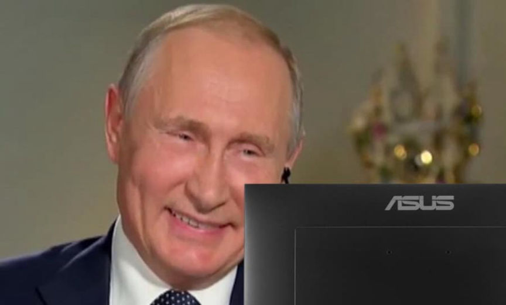
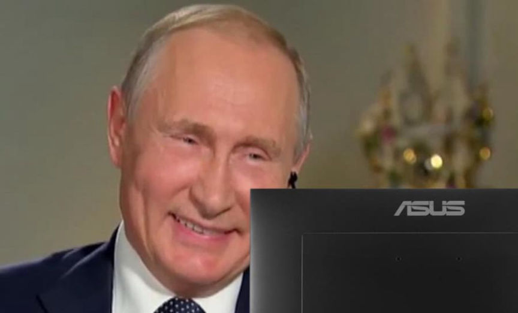

Russia Likely to Legalize Cryptocurrency for International Trade
~1 min read | Published on 2022-09-05, tagged Cryptocurrency, Legalize using 249 words.
Russia may legalize the use of cryptocurrency for international trade, according to the Deputy Minister of Finance.
In an interview with Russia-24, Deputy Minister of Finance Aleksey Moiseev said that the Ministry of Finance and the Central Bank agreed that “it is impossible to do without cross-border settlements in cryptocurrency.”
“As for the regulation of the cryptocurrency market, the difference in approaches has remained. But I can say that the Central Bank has also rethought [the approach], taking into account the fact that the situation has changed, and we are rethinking it. Because the infrastructure that we plan to create is too rigid for the use of cryptocurrencies in cross-border settlements, which, of course, we must, first of all, legalize somehow.” The Deputy Finance Minister also spoke about creating a regulatory framework that prevented drug dealers and money launderers from using cryptocurrency.
“Now people open crypto wallets outside the Russian Federation. It is necessary that this can be done in Russia, that this is done by entities supervised by the Central Bank, which are required to comply with the requirements of anti-money laundering legislation, and first of all, of course, to know their client,” the deputy minister explained.
Curious talk of regulatory frameworks and the need to prevent criminals from using cryptocurrency, given that Russia’s use of cryptocurrency for international trade will likely also be “illegal.” Maybe if the GAE/West just sanctions Russia harder…
TASS link is behind a captcha. Cannot archive it.
Минфин заявил о возможной скорой легализации трансграничных расчетов в криптовалютах | tass.ru

In an interview with Russia-24, Deputy Minister of Finance Aleksey Moiseev said that the Ministry of Finance and the Central Bank agreed that “it is impossible to do without cross-border settlements in cryptocurrency.”
“As for the regulation of the cryptocurrency market, the difference in approaches has remained. But I can say that the Central Bank has also rethought [the approach], taking into account the fact that the situation has changed, and we are rethinking it. Because the infrastructure that we plan to create is too rigid for the use of cryptocurrencies in cross-border settlements, which, of course, we must, first of all, legalize somehow.” The Deputy Finance Minister also spoke about creating a regulatory framework that prevented drug dealers and money launderers from using cryptocurrency.
“Now people open crypto wallets outside the Russian Federation. It is necessary that this can be done in Russia, that this is done by entities supervised by the Central Bank, which are required to comply with the requirements of anti-money laundering legislation, and first of all, of course, to know their client,” the deputy minister explained.
Curious talk of regulatory frameworks and the need to prevent criminals from using cryptocurrency, given that Russia’s use of cryptocurrency for international trade will likely also be “illegal.” Maybe if the GAE/West just sanctions Russia harder…
TASS link is behind a captcha. Cannot archive it.
Минфин заявил о возможной скорой легализации трансграничных расчетов в криптовалютах | tass.ru

BRIC?